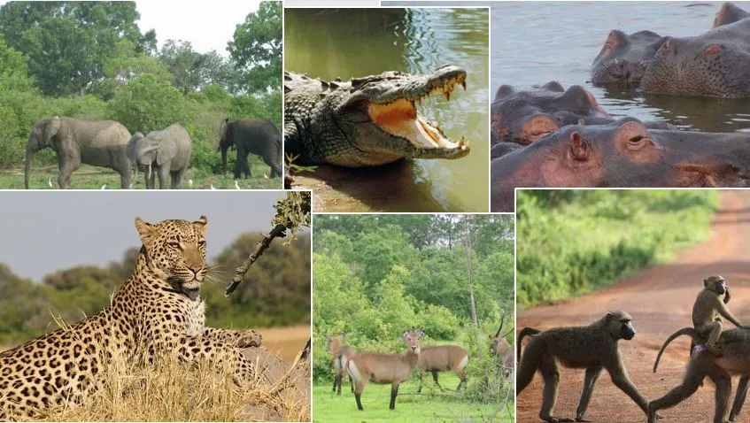
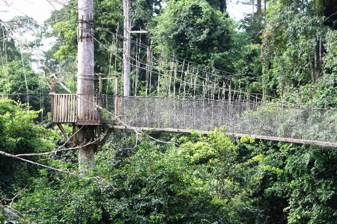
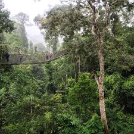
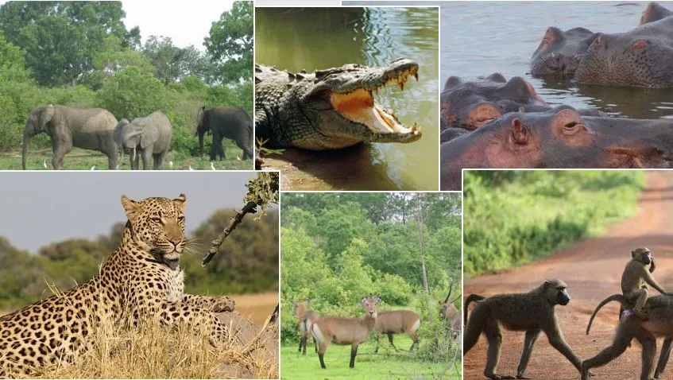
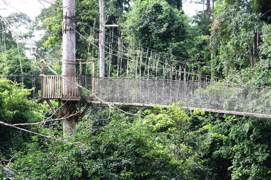
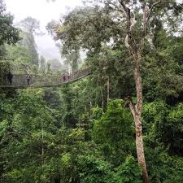
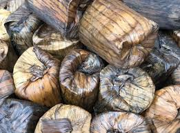
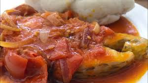
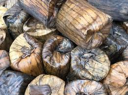
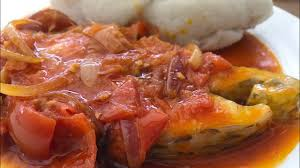

Historical Significance
The Central Region of Ghana, located on the country's southern coast, is a land of rich history, vibrant culture, and breathtaking natural beauty. With its diverse landscape, ranging from sandy beaches to lush rainforests, the Central Region offers a unique blend of experiences for visitors and locals alike.
The region boasts a rich history dating back centuries, having been home to powerful kingdoms and empires. Its strategic location along the coast played a significant role in the transatlantic slave trade. Today, the region is dotted with historical sites and landmarks that offer glimpses into its past.
Elmina Castle, a UNESCO World Heritage Site
One of the most notable historical sites in the Central Region is Elmina Castle, a UNESCO World Heritage Site built in 1482. It served as a trading post for gold, ivory, and slaves during the colonial era, and stands as a poignant reminder of the region's complex history and the transatlantic slave trade.
Another significant historical site is Cape Coast Castle, another UNESCO World Heritage Site located in the coastal city of Cape Coast. Built in 1664, Cape Coast Castle served as a major trading post and later as a prison for slaves before they were shipped to the Americas. It is a powerful testament to the region's historical significance and the human cost of the slave trade.
Cultural Heritage
The Central Region is home to a diverse population of ethnic groups, each with its unique cultural traditions and practices. The region is known for its vibrant festivals, colorful costumes, and traditional music and dance.
One of the most popular festivals in the Central Region is the Aboakyere Festival, celebrated annually by the people of Winneba. This festival commemorates the migration of the Fante people from the north and involves a reenactment of a hunting expedition.
Another notable festival is the Kundum Festival, celebrated by the people of Cape Coast. This festival is held to honor the Asafo companies, traditional warrior groups, and involves drumming, dancing, and parades.
Natural Beauty
The Central Region is blessed with stunning natural beauty, from its pristine beaches to its lush rainforests. The region's coastline is dotted with beautiful beaches, including the popular Kokrobite Beach and Elmina Beach.
The Kakum National Park, located in the heart of the Central Region, is a haven for nature lovers. This rainforest park is home to a variety of wildlife, including monkeys, elephants, and birds. Visitors can explore the park's canopy walkway, a series of bridges suspended high above the forest floor, offering breathtaking views of the rainforest.
 





Conclusion
The Central Region of Ghana is a captivating destination that offers a unique blend of history, culture, and natural beauty. Whether you're interested in exploring historical sites, immersing yourself in local culture, or simply relaxing on the beach, the Central Region has something to offer everyone.
Additional Information
- The Central Region is the second most populous region in Ghana, with a population of over 2.6 million people.
- The region's capital city is Cape Coast, a historic city with a rich cultural heritage.
- The Central Region is known for its agricultural production, including cocoa, rubber, and timber.
- The region is also home to a number of educational institutions, including the University of Cape Coast.
TRADITIONAL FOOD
 


